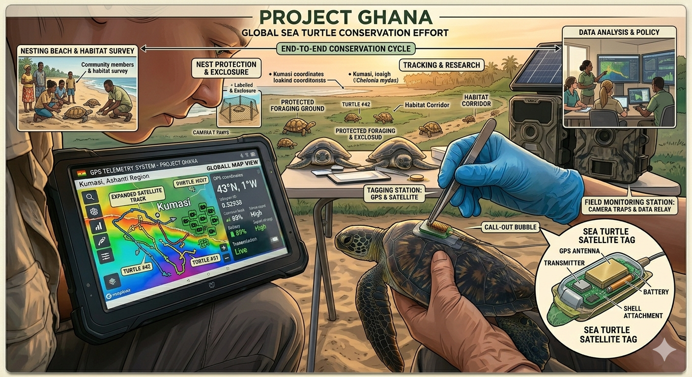

Our mission is to safeguard Ghana's most vulnerable tortoise populations through science-driven conservation, community engagement, and habitat restoration. We work in some of the country's most biodiverse yet threatened ecosystems, where tortoises play a vital role in maintaining ecological balance.
Without urgent action, habitat destruction, illegal wildlife trade, and climate change will continue to push these ancient species toward extinction. We believe that lasting conservation can only be achieved when local communities are empowered as stewards of their natural heritage.
Through partnerships with traditional authorities, government agencies, and international conservation networks, we are building a future where tortoises thrive alongside the people who share their landscape.

Expanded protected habitat for endangered tortoise species.
Priority tortoise species safeguarded across Ghana's ecosystems.
Native trees planted to restore critical tortoise habitats.